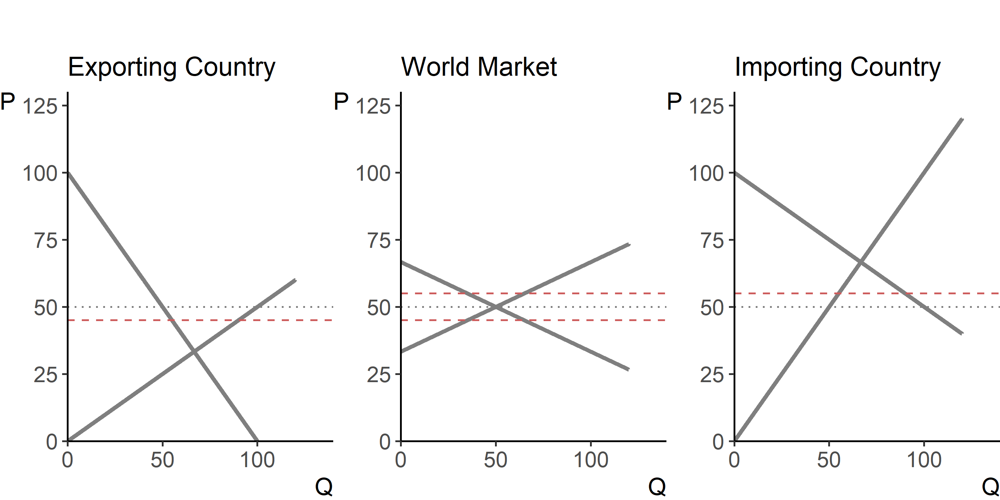

Norton, Alwang, and Masters (2022, chap. 17)
In agriculture, strongly divergent climatic conditions around the globe create ideal conditions for making use of comparative advantage in production. And while it would seem that free trade should be particularly attractive and relevant in agriculture, it has been traditionally an area where governments of high income countries as well as those of low and middle income countries have exercises certain degree of protectionism, i.e., they have been reluctant to open up domestic markets to international trade.
The case for free trade is that producers and consumers allocate resources most efficiently when governments do not distort market prices through trade policy. Economic welfare of a (small) country is the highest with free trade. With restricted trade, consumers, on average, pay higher prices than they would otherwise, i.e., with free trade, as well as firms produce more of the output somewhat inefficiently.
Protectionism consists of a set of barriers to trade that deviates the trade patterns from what would have been their state in absence of any regulations (i.e., in a free trade regime). In high income countries, the case for protectionism is primarily directed to distribute benefits to producers, to maintain a considerable degree of self–sufficiency, and, in the case of large countries, to achieve the more favorable terms of trade.
In low and middle income countries, barriers to trade are imposed in attempts to distribute benefits to particular groups, to generate government revenues, and to offset economic instability and food insecurity. In addition to these self-imposed restrictions, (small) low and middle income countries can also be affected by externally imposed protectionist policies of (large) high income countries.
Common levers for a trade restriction are quantity or price based that are applied to imported (or exported) commodities. Such levers include trade quotas, as well as import tariffs and export taxes. Quotas, e.g., export restrictions, are typically imposed by countries somewhat intermittently, during the years with a bad harvest season, or during periods of abnormally high prices for food commodities, for example. Tariffs and taxes are considered less distorting than quotas, and thus are more common longer-term application to trade restrictions. Other government interventions that are applied to local markets but can still impact/distort trade (albeit to a lesser extent than the aforementioned trade restrictions), are various taxes and subsidies, such as, for example, income taxes, value-added taxes, production subsidies, etc.
The following graph illustrates the impact of an import tariff on prices in the importing and exporting countries, as well as on the quantity traded. The aim of the tariff is to make the price of the imported commodity ‘less attractive’ to domestic consumers. The tariff leads to an increased price in the importing country; that is, it moves the price from the free-trade equilibrium toward the closed-economy equilibrium. As a result, less of the commodity is imported. This graph depicts a scenario wherein the importing country is a ‘large’ nation, and its trade policies impact world market, and to that end, result in decreased price of the commodity in the exporting country (or on the world market). Alternatively, if the importing country were to be a ‘small’ nation, its policies would have little (if any) impact elsewhere (graphically, this would be depicted by the horizontal excess supply curve).
Figure 8.1: The Effect of a Tariff on Trade
The terms of trade denotes export prices in terms of import prices. As alluded by the foregoing illustration, a large country can alter terms of trade in their favor by means of trade restrictions (e.g., tariffs or quotas) or other equivalent trade distortion mechanisms. The welfare effect of this is nonlinear, however. That is, a small tariff may lead to an increase in national welfare, but at some tariff rate, the welfare will begin to decrease as the economic efficiency loss exceeds the terms of trade gain. Likewise, an export tax that completely prohibits exports leaves a country worse off; but an export tax rate may exist that maximizes national welfare through the terms of trade. These effects, of course, ignore the possibility that other countries may retaliate against the large country by enacting their own trade restrictions.
After the World War II, nations around the world recognized the urgent need for coordinated policy efforts in the areas of economic development, monetary policy, and international trade. The focus shifted from bilateral to multilateral negotiations. With that in mind—and after the United States Congress refused to sign on an agreement reached by the Bretton Woods participants to form the International Trade Organization—23 nations signed a multilateral agreement regulating international trade known as the General Agreement on Tariffs and Trade (GATT) in Geneva on 30 October 1947 to take effect on 1 January 1948.
The GATT replaced a series of bilateral agreements that segmented world trade before the war. The agreement became the vehicle for trade negotiations for the next half century, until its successor, the World Trade Organization (WTO), was formed and took effect in 1995. In the meantime, eight rounds of multilateral trade negotiations took place under the GATT.
The early rounds primarily focused on negotiations on tariffs and on rules for trading blocs; the middle rounds increasingly focused on non-tariff issues. Agricultural trade restrictions received relatively little attention until the Uruguay Round, which commenced in 1986. Prior to this, high income countries strongly resisted compromises on agriculture. Subsequently, a compromise was reached by guaranteeing farmers continued support, and allowing subsidies, that cause not more than minimal trade distortion, to meet public policy aims. Agricultural trade restrictions were at the heart of the Doha Round, also called the Development Round, under the WTO.
The Uruguay Round negotiations highlighted the disparities in the ways they envisaged trade policy among high income countries and between high income and low and middle income countries. The negotiations also illustrated the diversity of interests among low and middle income countries: net exporting countries were concerned about market access and effects of export subsidies available in high income countries; net importing countries, were in addition concerned about possible rising prices in world markets, particularly for food grains.
In a 2001 meeting in Doha, Qatar, high income countries agreed to prioritize the issue of export subsidies. Subsequently, in a 2003 ministerial-level WTO meeting in Mexico, a group of 21 low and middle income countries requested tighter domestic support restrictions for high income countries, and more flexibility for special and differential treatment for low and middle income countries. While the agreement was not reached, the meeting went down in history as the first credible attempt by a group of low and middle income countries to affect the outcome of multilateral negotiations.
Idea of replacing agricultural price support with direct payments to farmers decoupled from production dates back to the late 1950s. Twelfth session of the GATT Contracting Parties selected a Panel of Experts, chaired by Gottfried Haberler, to examine the effect of agricultural protectionism, fluctuating commodity prices, and the failure of export earnings to keep pace with import demand in low and middle income countries. The report (1958) found that there was a decline in the terms of trade for primary commodities (relative to the manufactured goods).
This finding accords with what later became to be known as the Prebisch–Singer hypothesis (though Haberler himself had particular disagreement was with the idea that there was a systematic long-term decline in the terms of trade). The report stressed the importance of minimizing the effect of agriculture subsidies on competitiveness; recommended replacing price support with direct supplementary payments not linked with production; anticipated discussion on green box subsidies—the kind of subsidies that do not distort trade, or at most cause minimal distortion; that are government-funded (not by charging consumers higher prices); and that do not involve price support.
In 1980s, global economy had entered a cycle of recession, which led to a collapse of agricultural commodity prices. Financial and economic costs of agricultural policies rose sharply in many industrialized countries. Budget costs, shrinking foreign demand, and world surpluses that threatened a global trade war, coupled with the perception opening up markets could improve economic conditions, and generate much needed efficiency gains, forced agricultural issues to the top of the GATT agenda in the upcoming round of multilateral trade negotiations.
Agreement on Agriculture, which was reached in the third and final phase of the Uruguay Round, continues to be the most substantial trade liberalization agreement in agricultural products in the history of trade negotiations. The agreement revolved around the following three key directions:
Despite the aim and desire to further advance and fine-tune trade agreements among the involved nations, in July 2008, Doha Round negotiations broke down over agricultural trade issues, which involved a mechanism that would allow low income countries to impose tariffs for specific products if prices of these products were to decrease sharply, or if there were to be a surge in imports. In December 2013, in restarted negotiations, a partial agreement was reached on issues such as simplifying customs procedures. The agreement to relax major agricultural trade constraints was minimal, however. Indeed, the conclusion of the Doha Round may have marked the end of significant progress in global multilateral trade liberalization for the foreseeable future.
Page built: 2022-08-08 using R version 4.1.2 (2021-11-01)